Information Systems · Introduction to AI · Business
If AI can do it, should it do it alone?
AI is now part of everyday business work: drafting, analysing, recommending and, increasingly, acting. This module helps you decide what to delegate to AI, where people must stay involved, who is accountable, and how to keep your own understanding real when AI makes everything feel easy.
Organisations constantly decide whether to let AI act on its own, or to keep people involved to guide, monitor or approve its work.
This is not an all-or-nothing choice. There is a spectrum of oversight, and the right point on it depends on the risk, the consequences and the need for human judgement in each task.
For business graduates this is a core professional skill: capturing the speed and scale of AI without exposing the organisation to costly errors, ethical blind spots and accountability failures.
The question for this module
If AI can perform a task, does that mean we should let it perform the task by itself?
The learning journey
The six human-in-the-loop parts follow Bloom's taxonomy, a step-by-step framework for how learning deepens: from remembering core facts (Know it) and grasping their meaning (Explain it), to using them in practical scenarios (Apply it), breaking down complex problems (Analyse it), evaluating ideas critically (Judge it), and finally creating your own solutions (Design it). Parts 7 and 8 then turn the same lens on you: how to keep your own understanding real, and how to use AI tools well and lawfully.
Bloom's level
Part
By the end you can…
1. Remember
Know it
Define human in, on, over and out of the loop.
2. Understand
Explain it
Explain how the four human–AI arrangements differ.
3. Apply
Apply it
Identify where the human is in unfamiliar AI-enabled situations.
4. Analyse
Analyse it
Examine risk, consequences, reversibility, reliability, context and accountability.
5. Evaluate
Judge it
Decide where the human should be, and justify it with evidence.
6. Create
Design it
Design how humans and AI should work together in a business process.
How this module works
Work through it in order the first time, then use it as a reference. Each part shows a suggested time.
Quick checks end most parts. Choose an answer to see the explanation. Nothing is graded.
Scenarios and activities have a suggested answer you can reveal after you have tried them yourself.
Your notes in the activities and the Design challenge save in this browser only. Use the download button to keep a copy.
Part 1 of 8 · Know it
What is human in the loop, and why does it matter?
Combines machine efficiency with human intelligence and judgement. People stay actively involved to train, use, verify and refine AI outputs so quality, accuracy and context are maintained.
Responsible AI
Developing and using AI to benefit society and individuals while actively minimising harm and unintended consequences.
Knowledge cut-off
A model is trained on data only up to a certain date, so it is unaware of events, facts or updates after that point.
AI hallucinations
False, fabricated or inaccurate information produced by a model. Dangerous for factual or operational work (such as forecasting), though occasionally useful as creative inspiration.
Human in the loop (HITL)
Human in the loop means that people remain actively involved in an AI-enabled process, rather than handing a task to AI and accepting whatever it produces. Humans may set goals, provide context, review outputs, exercise judgement, correct errors, make decisions and take responsibility for outcomes.
Carry this question through the module
What should we delegate to AI, what should remain with humans, and where should humans intervene?
Everyday example. You ask an AI assistant to draft an email, but you review and edit it before pressing Send. The AI does part of the work; you remain in the loop because the final action needs your judgement and approval.
Think about it: if the AI sent the email itself and just told you afterwards, would you still be "in the loop"?
No. Once the AI can complete the action before you review it, you are no longer a required step. At most you are monitoring after the fact, which is a different arrangement (you will meet it in Part 2 as human on the loop).
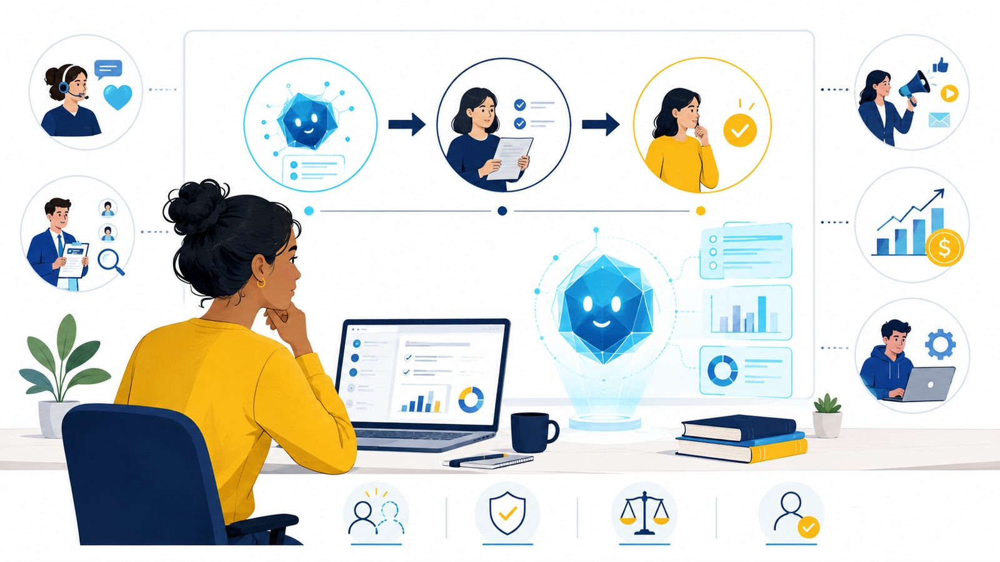
The goal is not to remove the human; it is to design the right relationship between human judgement and AI capability.
Why it matters
1
AI can be wrong
Outputs can be inaccurate, incomplete, biased or inappropriate, and they are delivered with the same confident fluency either way.
2
Context and judgement matter
AI may lack the organisational, social or ethical context needed for a good decision.
3
More autonomy, different risks
As AI moves from generating content to taking actions, oversight becomes more consequential. Errors stop being typos and become business events.
4
Humans remain accountable
Using AI does not remove our responsibility. You cannot take an algorithm to court or fire it; people and organisations answer for outcomes.
The human is not automatically better
Adding a person to a process does not magically fix it. Poorly designed oversight creates its own failure points.
Cost and scalability
If every AI decision needs human review, the process becomes slow and expensive, and loses the speed AI was meant to deliver.
Human error and inconsistency
People get tired, distracted, inconsistent and biased. Reviewing 500 AI outputs in an afternoon leads to approval fatigue.
Privacy and security
Human review can expose sensitive personal, financial or medical data to people who would not otherwise need to see it.
Human in the loop is not automatically "safer". The real question is whether the right person is involved at the right point, for the right reason. Picture signing off 200 automated expense claims at 4:55pm on a Friday: is that oversight, or a human rubber stamp?
Why put humans in the loop?
Accuracy and reliability
People can spot unusual cases, errors and outputs that look plausible but make no practical sense.
Ethics and accountability
People can apply contextual and ethical judgement where decisions affect others or involve competing interests.
Transparency and control
Human review creates chances to question, override and document AI-supported decisions, and someone who can explain them.
Example: AI-assisted recruitment. An AI system can summarise and screen a thousand applications in seconds, but a person should examine its recommendations, look for inappropriate patterns and take responsibility for the final decision. The AI assists the sorting; the human owns the decision.
So what? Three words for every AI workflow
AutonomyWhat can the AI do by itself? Recommend, decide, or actually act without asking?
OversightWhere and how do humans stay involved? Approve every action, monitor, intervene only when needed, or set the rules?
AccountabilityWho is responsible for the outcome if the AI makes a mistake or causes harm?
Too much human intervention removes the efficiency and scale that make AI valuable. Too little exposes the organisation to errors, inappropriate decisions, privacy breaches and bias. The "loop" vocabulary in Part 2 gives you a precise way to describe where you have set that balance.
From simple assistance to greater autonomy
Chat assistantsAI suggests → you decide whether it is useful.
Vibe codingAI builds an app or code → you test and evaluate whether it works and is safe.
AI workflowsAI completes several connected steps → you decide where a person must check the process.
AI agentsAI plans and takes actions itself → you set its autonomy, its limits and when it must ask a person.
The important question is not only "What can the AI do?" It is also "What should the AI be allowed to do, and where must human judgement remain?"
Related concepts
Human–AI collaboration
How work is divided between people and AI according to what each does well.
Augmentation vs automation
Is AI supporting human work, or performing work that people used to do?
Meaningful human control
More than having a person somewhere in the process. The person needs enough information, authority, competence and opportunity to intervene for their oversight to be real.
AI autonomy
How far a system can pursue goals, make intermediate decisions and take actions without a human prompt at every step. Central once you reach agentic AI.
Quick recallShow a model answer
Human in the loop means that a person must actively review, judge or approve an AI output or action before the process can be completed.
Quick check: Part 1
Part 2 of 8 · Explain it
In, on, over and out of the loop
About 25 minutes
Understand and explain the different human–AI relationships.
AI performs part of the task, but a human must review, decide or approve before it proceeds. The system halts and waits.
An AI drafts an email to a client. You check the facts, tone and wording before clicking Send.
Human on the loop (HOTL)
AI operates largely independently while a human monitors it and can intervene or stop it.
An AI customer-service agent handles routine enquiries. A staff member watches conversations and takes over difficult cases.
Human over the loop
Humans set the rules, permissions and boundaries within which the AI operates, and govern the system rather than individual decisions.
A company lets an AI agent schedule meetings but prohibits it from approving expenses or sharing confidential documents.
Human out of the loop (HOOTL)
AI completes the task without routine human review or intervention.
Your email service moves obvious spam to the junk folder without asking you.
HITLAI recommends → human decides → action
HOTLAI decides and acts → human monitors and can intervene
OverHuman sets the rules → AI decides and acts within them
HOOTLAI decides and acts → no routine human involvement
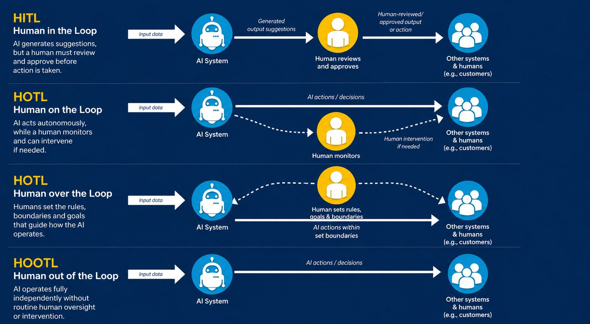
Where the human sits in each arrangement, from approving every action (top) to no routine involvement (bottom).
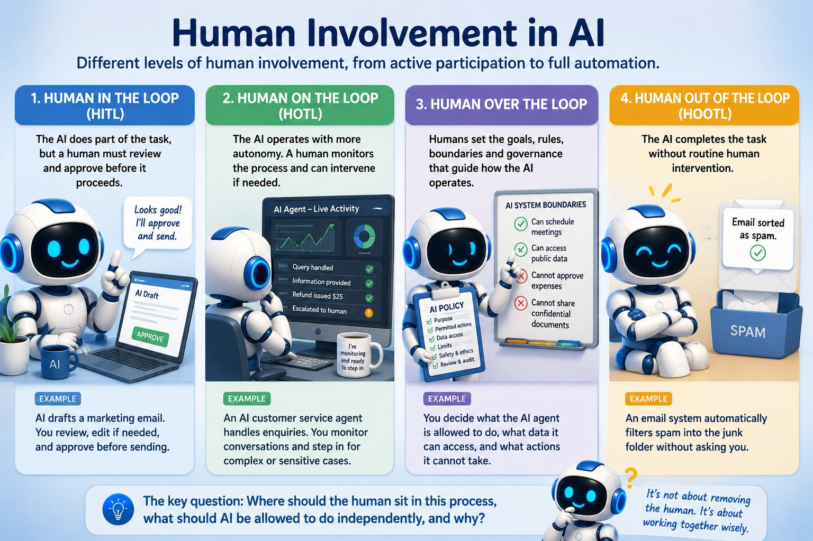
Different levels of human involvement, from active participation to full automation.
Worked examples
An AI study-planning app under each arrangement.
An AI study-planning app
AI handling assessment-extension requests at a university
HITL
The AI recommends a timetable; the student reviews it and decides whether to follow it.
The AI reviews each request and recommends a decision; a staff member decides, then the outcome is recorded.
HOTL
The AI creates and adjusts the timetable automatically; the student checks progress and steps in if it becomes unrealistic.
The AI decides and updates the record automatically; a staff member monitors and can intervene in unusual cases.
Over
The student sets the rules (available hours, class times, breaks); the AI works within them.
Staff set the rules (maximum length, acceptable evidence, when to escalate); the AI decides within them.
HOOTL
The AI creates and changes the timetable with no routine student review.
The AI approves or rejects requests with no routine staff review, unless a student later challenges a decision.
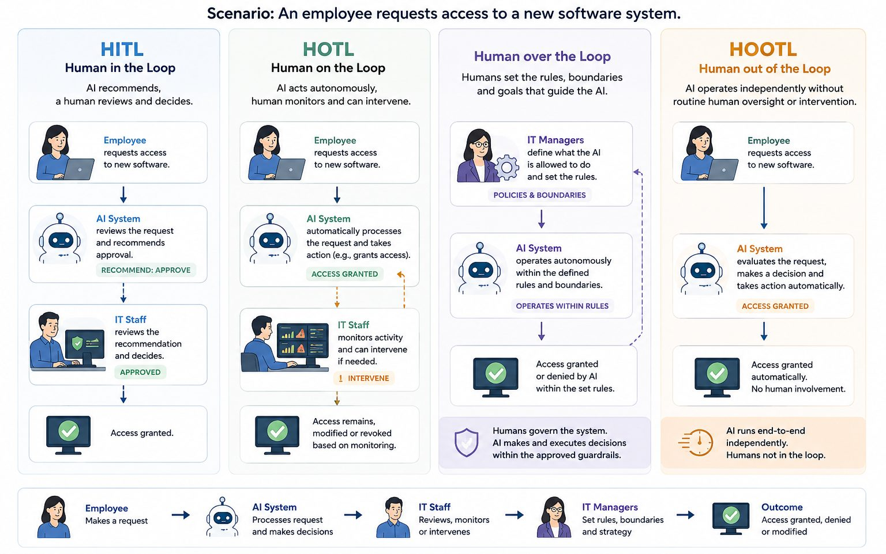
An IT service desk. HITL: IT staff approve each access request. HOTL: the AI grants low-risk access while staff monitor and can reverse it. Over: managers decide what the AI may do (reset passwords, grant standard software) and what it may not (administrator rights, confidential systems). HOOTL: the AI unlocks a locked account automatically once predefined conditions are met.
Where humans enter the AI lifecycle
Human involvement is not only a final sign-off. People shape AI at three stages.
Training time (knowledge)
People provide correct "ground-truth" labels, and active learning directs their effort to edge cases and low-confidence examples.
Tuning time (judgement)
In reinforcement learning from human feedback (RLHF), people rank responses to teach the model to be helpful, harmless and honest.
Run time (guardrails)
Where business workflows live: confidence thresholds route uncertain outputs to people, approval gates stop high-impact actions until authorised, and escalation queues flag complex exceptions.
The trust curve. Systems often start with strict human approval (HITL) to learn and establish guardrails, then move towards monitoring (HOTL) or more autonomy as reliability is proven, while the trade-offs of human involvement (throughput bottlenecks and inconsistent reviewers) remain.
Explain it · 2 minutesShow a model answer
In the first, a person's involvement is required before the AI completes each important action. In the second, the AI acts independently while a person monitors it and can intervene when necessary. The key distinction: does the AI require human approval before it acts?
Quick check: Part 2
Part 3 of 8 · Apply it
Where is the human?
About 15 minutes
Use the concepts to classify unfamiliar AI arrangements.
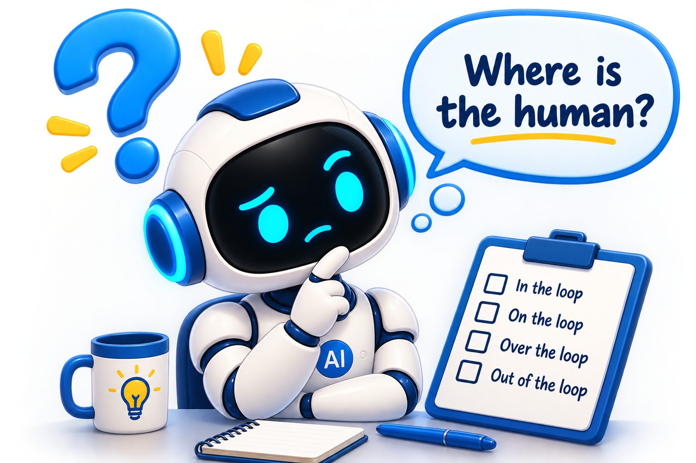
For each situation, ask two questions:
Does the AI need a person's approval before it acts?
If not, is a person actively watching and able to step in, only setting the rules, or not involved at all?
Classify the arrangement
Fill in the gaps
Cover the labels: can you name each arrangement and what the parent is doing?
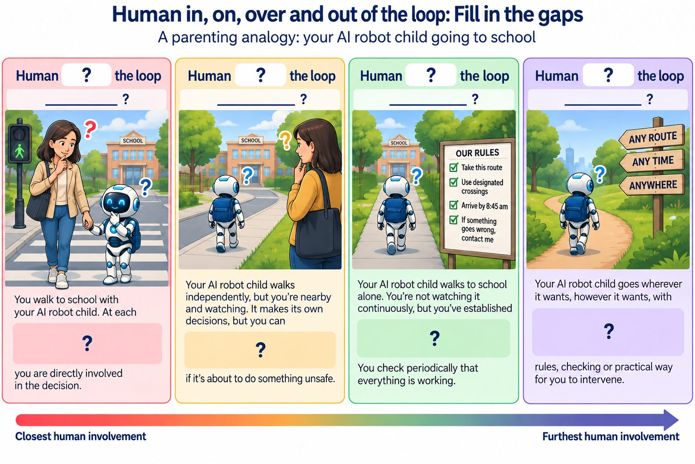
Show the answers
In the loop: you do it with them, part of every decision. On the loop: you watch them do it and can intervene if needed. Over the loop: you set the rules and check periodically; you govern the system with rules and review. Out of the loop: you are not involved; no meaningful human involvement.
Part 4 of 8 · Analyse it
What should decide how much autonomy AI gets?
About 35 minutes
The level of autonomy should depend on the task, not just on what the AI is technically capable of.
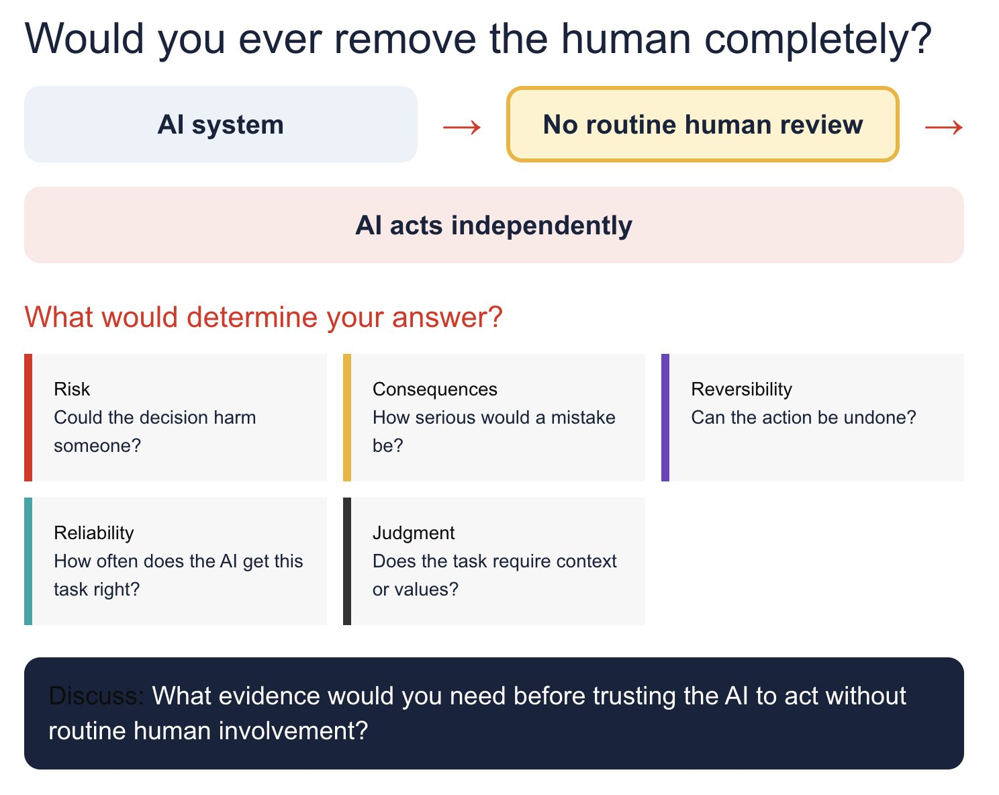
1
Risk
What happens if the AI gets it wrong?
2
Consequences
Who or what could be affected, and how badly?
3
Reversibility
Can an incorrect action be easily undone?
4
Reliability
How confident are we in the AI's performance on this task?
5
Context
Is human judgement needed for unusual or ambiguous cases?
6
Accountability
Who is responsible for the outcome?
The higher the risk, consequences, uncertainty and need for judgement, the stronger the case for meaningful human involvement.
For example: an AI system could reasonably reschedule an internal team meeting on its own, because a mistake is low-risk and easy to fix. Rejecting a job applicant affects someone's livelihood and raises fairness, discrimination and legal concerns, so it calls for meaningful human review and approval, even though both systems are technically capable of acting alone.
Three scenarios to analyse
Read each scenario, answer the questions in your own words, then compare with the suggested answer.
Scenario 1 · Fictional
Horizon Bank's AI lending system
Horizon Bank introduces an AI system to help process personal loan applications. It analyses each applicant's information and relevant financial data and produces a recommended decision and risk assessment.
Stage 1. For three months, every recommendation goes to a lending officer, who approves or rejects the application. The AI cannot communicate or implement a decision until the officer has decided.
Stage 2. Reviewing everything is slowing processing, so applications the AI classes as low risk are now approved automatically. A team actively monitors the automated decisions as they happen and can suspend automation, reverse decisions or move applications to manual assessment.
Stage 3. Twelve months later, continuous monitoring stops. A Responsible Lending Committee sets which loan categories may be automated, lending limits, performance thresholds and mandatory escalation criteria. It audits the system periodically and can change or suspend it.
Which human-control model operates at each stage?
For each stage, what is the human actually doing that led you to that classification?
What changed about where human control sits from Stage 1 to Stage 3?
Show a suggested answer
Stage 1: in the loop. The officer must decide before anything is implemented (deciding and approving). Stage 2: on the loop. Low-risk loans are approved automatically while a team watches in real time and can intervene (supervising). Stage 3: over the loop. Individual decisions are no longer supervised; the committee governs through rules, limits, thresholds, escalation criteria and audits (governing).
Human control moved progressively further from each individual decision: in → on → over. AI autonomy grew from recommending only, to acting under active supervision, to acting under higher-level governance.
Scenario 2 · Fictional
SwiftMart's AI customer-service agent
SwiftMart deploys a generative AI agent for online customer enquiries.
It answers routine questions (opening hours, product availability, delivery tracking) automatically. No employee reviews or monitors these.
For refunds over $100, it gathers information and recommends a decision; an employee must decide before any refund is issued.
For refunds of $100 or less, it decides and issues the refund itself. A supervisor monitors these on a live dashboard and can reverse decisions or pause automation.
Separately, an AI Governance Committee decides what may be automated, the maximum automated refund, prohibited uses and when to escalate. It audits periodically but does not supervise individual interactions.
Which model operates for (a) routine enquiries, (b) refunds over $100 and (c) refunds of $100 or less?
How does the supervisor's role differ from the Governance Committee's?
How can several models operate at the same time in one process?
Show a suggested answer
(a) Routine enquiries: out of the loop. (b) Refunds over $100: in the loop. (c) Refunds of $100 or less: on the loop. The Governance Committee is over the loop at system level.
The supervisor is operationally close: watching automated decisions and able to intervene (on). The committee does not supervise transactions; it sets rules, boundaries, permitted uses and escalation conditions, and audits (over).
Identify the model for a particular decision or layer of control, not for the whole technology. One business process can contain out, in, on and over simultaneously.
Scenario 3 · Fictional
TalentMatch AI recruitment
A multinational consulting firm introduces TalentMatch, an AI recruitment system for its graduate program. At first it recommends which applicants should progress, and recruiters review every recommendation and make the final decision.
After a trial, TalentMatch automatically rejects applicants below one threshold and progresses those above another. Applicants in between are still reviewed by recruiters. Nobody actively monitors the automated decisions; instead the HR governance team runs regular audits, decides what information TalentMatch may use, sets the thresholds, reviews outcomes and can change or suspend the system.
One morning, a faulty software update makes TalentMatch reject 3,200 applicants using the wrong threshold. Because nobody is watching the automated decisions, the problem isn't found until the next governance review.
Which model applies to (a) the original process, (b) intermediate applicants after the redesign and (c) automatically processed applicants after the redesign?
Why is the HR governance team's role "over" rather than "on" the loop?
Would you change the form of human control for the automated decisions? Which model would you add, and why?
Show a suggested answer
(a) In the loop: recruiters decide every case. (b) In the loop: intermediate cases still need a recruiter. (c) Automated without prior approval or active supervision, but under over-the-loop governance.
The HR team is not watching decisions as they happen or positioned to intervene in real time. It sets rules and boundaries, reviews aggregate outcomes and audits: governance, so "over".
A strong response keeps the governance but adds on-the-loop monitoring, for example alerts when rejection rates or score distributions suddenly change, with a person able to pause automation. Ambiguous or exceptional cases could also be escalated to in-the-loop review. Over-the-loop governance is not wrong in itself; the problem is that periodic review alone let 3,200 consequential errors pile up before anyone noticed.
Key takeaway
IN: the human participates in or approves the decision.
ON: the AI acts autonomously while a human actively supervises and can intervene.
OVER: the AI acts autonomously while humans govern the system through rules, audits, constraints and accountability.
OUT: the AI acts without meaningful human review or intervention in that process.
The unit of analysis matters. Don't label a whole AI system as simply in, on, over or out. First identify the specific decision, action or level of control you are examining; different parts of one process can use different models at the same time.
In practice: Australian industry
Leading Australian organisations treat "unsupervised speed" as a liability. Three examples show how they place people across the spectrum.
Model
Typical business posture
HITL
Mandatory for high-stakes, irreversible or regulated actions, such as credit refusals or deploying code to production.
HOTL
Standard for medium-risk, high-volume tasks, such as real-time fraud-alert triage or scaling cloud systems.
HOOTL
Restricted to low-risk, reversible internal tasks, such as tagging tickets or generating meeting summaries.
Atlassian: guardrails, not promises
Atlassian's guidance for AI agents in Jira and Rovo argues that a guardrail must be enforced by the system the agent works in, not left to the agent to honour, because instructions can be forgotten, misread or overridden. Tasks are split by consequence and reversibility: low-stakes, reversible work (release notes, tidying tags, summarising feedback) runs autonomously; high-stakes, irreversible work (deploying to production, deleting databases, spending budget) is locked behind a human approval gate.
Macquarie Bank: AI as first responder
When banking platforms have an outage, every minute matters. Macquarie's reliability engineers, working with the monitoring platform Dynatrace, use AI to scan huge volumes of logs and alerts and isolate probable root causes, "with a human in the loop to help guide the triage process". The machine does the analytical heavy lifting; engineers make the final call on the fix.
Commonwealth Bank: human judgement as the anchor
CBA's chief executive Matt Comyn has framed AI as a test of trust: whether customers see safer payments, faster help and better decisions "backed by human judgement". Models intercept scam payments and flag money-laundering anomalies in milliseconds, while complex resolutions and credit disputes stay with people who can weigh hardship and vulnerability.
Consequence vs reversibility. Consequence asks how severe the damage to money, safety or trust could be if the AI is wrong. Reversibility asks how hard or expensive it would be to undo. Low consequence and easy to undo: the agent may act. High stakes or permanent: an unskippable human checkpoint.
The rubber-stamp trap
A name on a process map is not oversight. Imagine an analyst reviewing an automated fraud queue who must process 60 cases an hour: one minute per case. Three predictable failures follow:
Automation bias
A precise score such as "98.4% fraud probability" invites deference rather than investigation.
Misaligned KPIs
If reviewers are judged on speed, not error detection, they are paid to click "Approve".
Rubber-stamping
The person is no longer a control, just an exhausted, expensive step in an automated machine.
If harm follows, leaders cannot hide behind "a human approved it". When the design made genuine review impossible, responsibility sits with the leadership and the system design.
Three rules for future business leaders
Gate what you cannot undo. If an action cannot be cleanly reversed (terminating a contract, closing an account, publishing sensitive data), build an unskippable human approval gate into the workflow.
Never measure reviewers on volume alone. Reward people who catch subtle errors. Meaningful oversight needs productive "cognitive friction": time and context to question the machine.
AI is the analyst; the human is the executive. Let models process data, summarise documents and detect weak signals. Keep discretionary, ethical and empathetic decisions with people who carry accountability.
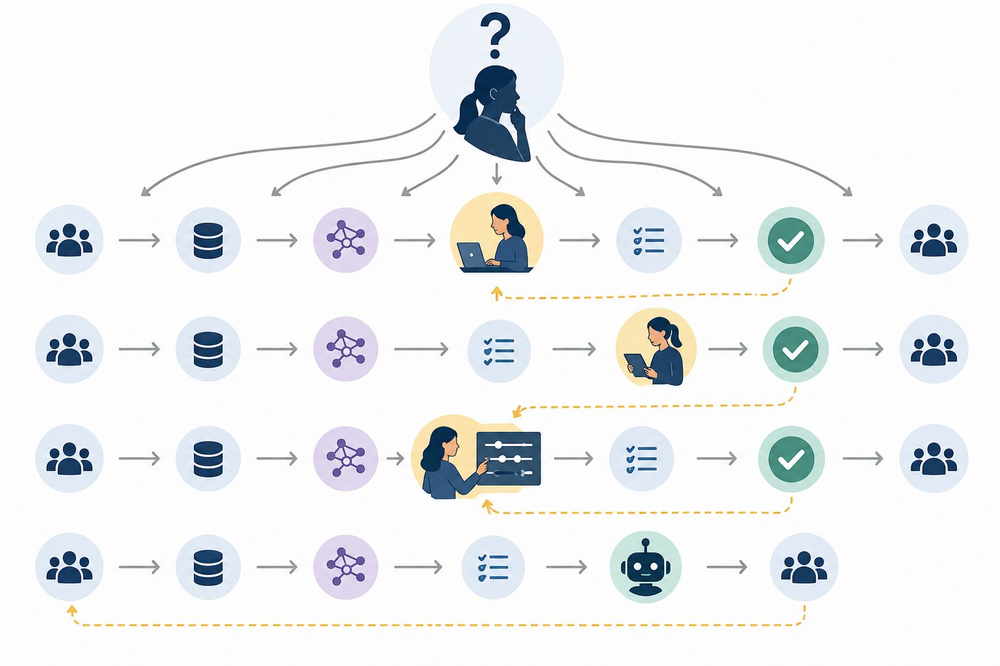
"Human in the loop" is not one fixed architecture. It is a design question: where do human knowledge, judgement and authority enter an AI-enabled process?
Quick check: Part 4
Part 5 of 8 · Judge it · Case study
Navigating the jagged technological frontier
About 35 minutes, plus an optional video
Evidence that AI can improve performance on some tasks and make it worse on others, and what that means for meaningful human control.
Why read this case? Before you can design a human–AI arrangement in Part 6, you need to understand the opportunities and risks of AI in knowledge work. This case is not a model answer for every process; it helps you recognise the risks, responsibilities and kinds of human involvement you will need to judge.
The study
Researchers from Harvard Business School and colleagues partnered with Boston Consulting Group (BCG) to run a field experiment: a study in a realistic work setting. 758 consultants completed realistic consulting tasks after a baseline skills test, and were randomly assigned to one of three groups:
No AI
The control group, using their own expertise and normal tools.
GPT-4 access
Free to use the model however they chose.
GPT-4 plus prompt guidance
Model access plus an overview of prompt-engineering strategies.
Because assignment was random, differences between the groups can be attributed to AI access rather than to one group being more skilled.
What is the jagged frontier?
The "technological frontier" is the boundary between tasks an AI can do reliably and tasks it cannot. It is jagged because the boundary is uneven: capability does not decline smoothly from easy to hard tasks. An AI may excel at generating ten product ideas but stumble when comparing interview notes with a spreadsheet to find one subtle contradiction, even though the second task looks more structured. And you often cannot tell in advance which side of the frontier a task is on, because the answer sounds equally polished either way.
Inside the frontier
When AI helped
On 18 creative and analytical tasks (product ideas, segmentation, marketing copy, roll-out plans), consultants using AI completed 12.2% more tasks, about 25% faster, with quality rated roughly 32% higher by independent evaluators.
Outside the frontier
When AI made it worse
On a deceptively tricky brand-strategy task, the spreadsheet suggested an obvious answer but a clue in the interview notes overturned it. Correct answers: 84.5% without AI, 70.6% with AI, and about 60% with AI plus prompt guidance.
What went wrong? The AI processed the surface-level numbers, produced a fluent, confident recommendation and missed the subtle insight. Because it sounded so authoritative, many consultants stopped cross-checking the sources and accepted the flawed analysis. Polished language made incorrect reasoning harder to notice.
Centaurs and cyborgs
The researchers saw two natural styles of working with AI. Neither is better in general; each fails in its own way.
Dimension
Centaur
Cyborg
Core idea
A clear division of labour. Human and AI handle separate parts of the task.
Continuous integration. Human and AI work in a tight back-and-forth loop.
Pattern
Sequential hand-offs: frame the problem, delegate a block to AI, step back in to audit, write the final output yourself.
Iterative micro-cycles: draft, ask for sharper phrasing, push back, add a constraint, refine line by line.
Advantage
Transparency and auditability; it is clear who did what.
Rapid creative exploration, nuance and adaptability.
Failure mode
Treating the AI's deliverable as a trusted black box.
Cognitive drift: swept up in the flow, forgetting to check whether the larger argument holds.
Best fit
Structured analysis, initial data clustering, boilerplate drafting, distinct research sweeps.
Complex argument, persuasive writing, creative synthesis, ambiguous problem framing.
Think of the centaur as working with a specialist subcontractor, and the cyborg as jamming at a whiteboard with a clever colleague.
The skill-equalising effect
Consultants in the lower half of the baseline skills test improved their quality by roughly 31% with AI; those in the top half improved by about 11%. AI narrowed the gap between newer and more experienced workers. But experts remain better at sensing what is missing, spotting hidden flaws and taking accountability, and the finding raises a hard question: if AI does the entry-level work through which juniors used to build judgement, how will they learn?
Falling asleep at the wheel
A person can remain formally responsible while having stopped actively monitoring. That is what happened on the brand-strategy task: the human was present, but meaningful oversight had weakened. A 2026 pre-print argues the same risk grows as AI becomes more autonomous: people overseeing fast, complex processes face information overload, approval fatigue and reduced situational awareness, and long reliance on AI can erode the very skills oversight needs, such as vigilance, judgement and domain expertise. Effective oversight has to be designed in: clear chances to intervene, deliberate pauses at high-risk moments, independent checking, training and activities that preserve human expertise.
Human in the loop is meaningful only when people have the knowledge, attention, information, time and authority to question and override the AI.
Three questions for any AI workflow
Where is the human in the process?
What can that person independently verify?
Do they have the authority and opportunity to reject the AI's recommendation?
Jot down brief notes. There is often more than one defensible answer, as long as you explain your reasoning.
Find your own frontier. Name one task from your study or work where AI is likely to be useful, and one where it might give a convincing but unreliable answer. What makes them different? Give one way to check the second.
Was the human really in control? The consultants could read the AI's output. Why might that not be enough? What should they have done before accepting it?
The trust trap. The group with prompt-engineering guidance did worst on the tricky task. The study doesn't prove why. Why might guidance have increased confidence in a wrong answer? What safeguard would you add?
Choosing a workflow. You are preparing a competitive market analysis for a client. Centaur, cyborg or a combination? Which tasks would AI do, which would you do, and where would you check?
Designing safeguards. Choose two safeguards against over-reliance (for example checking original sources, a second analysis, someone challenging the recommendation, recording uncertainty, approval for high-consequence decisions). Why would they help?
The skill equaliser. If AI helps lower performers more, what could happen to entry-level roles? What should organisations provide so juniors still develop judgement?
How much autonomy? Choose one task from the case. Should it be in, on or over the loop, or have more AI autonomy within clear limits? Justify it using risk, uncertainty, consequences and the need for judgement.
These findings come from one experiment with specific consultants and tasks. Read them in the context of the original publication rather than generalising to every job, AI system or organisation.
Quick check: Part 5
Part 6 of 8 · Design it
Design the loop
About 30 minutes
Design a human–AI arrangement for one business process, and justify how it keeps meaningful human control.
This is a thinking exercise. You are not building, training or implementing an AI system. You are planning how humans and AI should share one business process: what AI does, what people do, where responsibility stays with people, and how the design prevents inappropriate reliance on AI.
Using AI appropriately for this challenge
Develop your own first proposal before asking an AI anything. Then use AI as a critical discussion partner: ask it to find weaknesses, suggest risks you missed, challenge your assumptions or help you check whether your arrangement keeps meaningful human control. Don't ask it to produce the design for you, and don't present its ideas as yours without evaluating and developing them. Use AI to test your thinking, not to replace it.
Your design
Choose one business process you know: recruitment, marketing, HR, financial services, IT support, customer service, healthcare administration, education, procurement, legal services, logistics or sales. Then complete each field.
Show a worked example: AI-assisted customer service
Business process: responding to customer enquiries, such as a delayed order, a refund request or a complaint.
The AI can: classify incoming enquiries; pick out the relevant details from the message; draft a suggested reply using approved knowledge-base content; flag enquiries that may need escalation.
A human must: review the customer's situation and the AI's draft; check the reply is accurate, appropriate and fair; revise it where needed; approve and send it.
The AI must not: issue refunds or compensation on its own; make exceptions to company policy; respond to complaints involving serious harm or legal threats; make decisions about vulnerable customers without human review.
Hand over when: the AI is uncertain; the enquiry falls outside standard procedures; the customer seems distressed or vulnerable; or the decision could have significant financial or reputational consequences.
Arrangement: human in the loop for every reply, and mainly a centaur workflow: the AI prepares and classifies, the human keeps judgement, approval and accountability.
Why: it captures AI's efficiency while consequential decisions stay under meaningful human control.
Optional: pitch it in two minutes
If you are working with others, present your design in two minutes, with at most two slides. Explain the process and why you chose it, the AI's role, the human's role, the boundaries, when a human must intervene, whether the workflow is centaur, cyborg or both, and how the whole arrangement keeps meaningful human control.
Part 7 of 8 · Thinking well with AI
Know what you know: the illusion of explanatory depth
About 30 minutes
Explain the illusion of explanatory depth and intellectual humility, see how AI tools make the problem bigger, and adopt habits that protect your learning.
Activity · 6 minutes · work alone
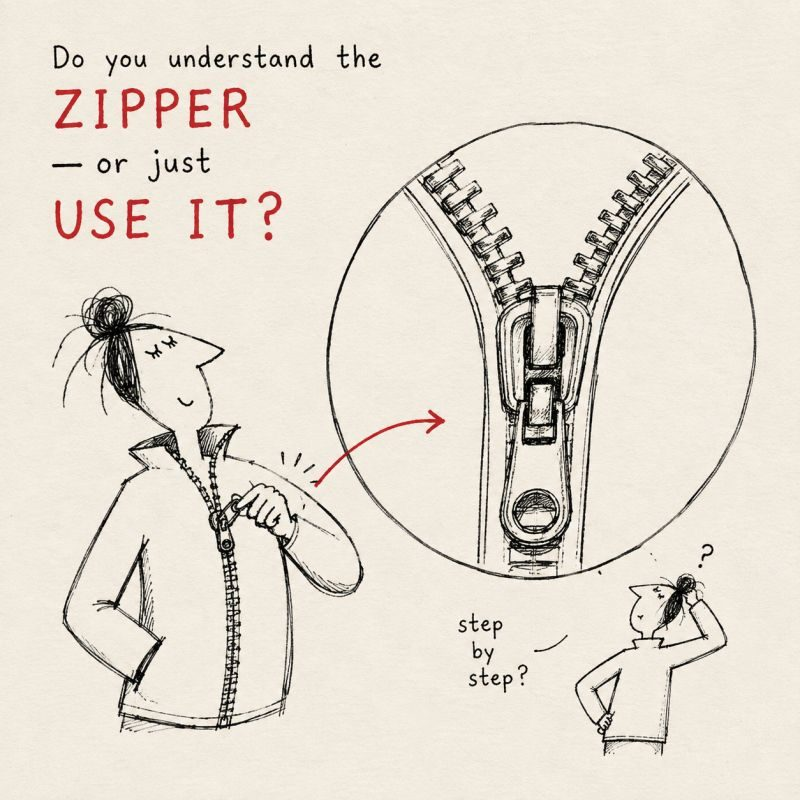
How well do you know a zipper?
Find a zipper on a bag, jacket or pencil case. Don't search online.
How a zipper actually works
Every tooth has two parts: a hook on top and a hollow underneath.
The slider is a Y-shaped channel. It pushes the two rows together at an angle, so each hook drops into the hollow of the tooth opposite.
Pulling sideways keeps it shut. When the two sides are pulled apart, the force acts sideways on the teeth, not upwards, so they stay locked.
Most people write "the two sides join together." That is a description, not an explanation.
This is the illusion of explanatory depth
We believe we understand things much better than we really do.
I have seen it✓ Easy.
I can use it✓ Easy.
I can explain it✕ The only real test. Nobody ever asks us to explain a zipper, so we never find out that we can't.
Cognitive scientists Leonid Rozenblit and Frank Keil studied this at Yale in 2002. They asked people to rate how well they understood everyday objects such as a zipper or a lock, then to write a full explanation, then to rate themselves again. Ratings dropped, again and again, across many objects.
We see and use things every day, and familiarity slowly turns into a feeling of mastery.
We borrow other people's knowledge
You don't need to know how your phone's processor works, because engineers do. That's efficient, but we can't feel the border between our knowledge and theirs.
Our memory compresses
We remember the big idea, not the detailed steps, but the steps are where understanding lives.
It's not only about objects
The illusion also shapes opinions about economics, policy, healthcare and education. When people are asked to explain step by step how a policy would actually work, their confidence falls and their views become less extreme. They don't always change their conclusion, but they become more humble and more open to other views. That is intellectual humility: accuracy about the edges of your own knowledge. It's a professional skill, not a weakness.
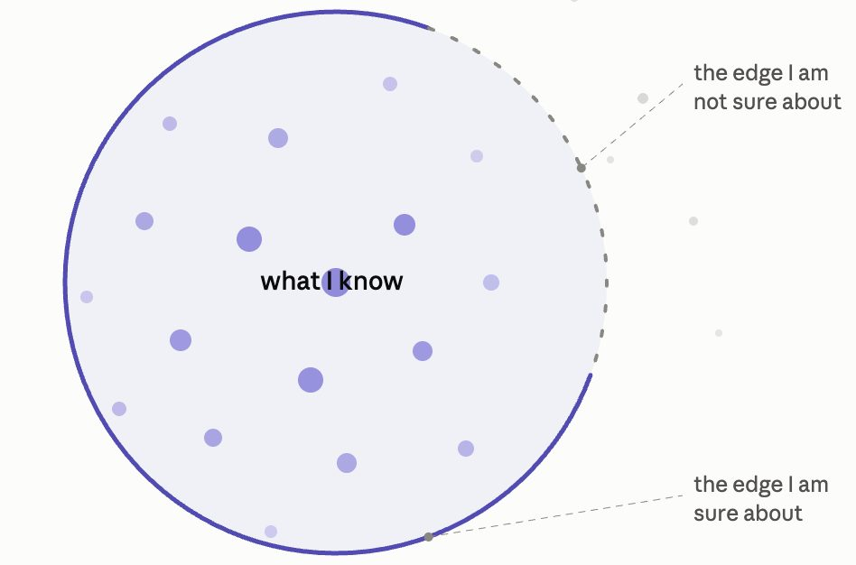
Intellectual humility means knowing where the solid edge of your knowledge ends and the uncertain edge begins.
It keeps the tool honest
AI output is fluent whether or not it is right. If you assume you might be wrong, you read with attention; humility turns an answer into something you check.
It keeps the learning real
The illusion makes confidence rise faster than ability. Humility notices "I couldn't reproduce this without the screen."
It's what makes you trustworthy
"I don't know yet, let me find out" is what gets you relied on. Overstating what you understand fails at the first hard question.
Why AI makes the illusion stronger
1
It sounds confident
Clear, well-organised English feels correct, even when it's wrong.
2
It is easy
Struggling is how you normally notice what you don't know. AI removes the struggle, and with it the signal.
3
It always has an answer
You never reach the edge of your knowledge, so you never feel where it ends.
4
The line blurs
You stop noticing the difference between what you know and what the tool knows.
This applies to every tool. General assistants give fluent answers on any topic in seconds. Source-grounded tools (which answer from your own documents) feel already checked, so you question them less. Developer playgrounds full of settings and models can make you feel like an expert on a system you haven't looked inside. Different tools, same risk: the better the tool, the stronger the illusion.
What it means for study and work
An assignment is not the test. You are. Reading a clear AI answer that matches what you were thinking feels like being ready. Your confidence goes up; your understanding doesn't move. You find out in the exam, the tutorial question, the interview: all closed-book, all asking you to explain. If you can't explain it without the screen, you haven't finished.
In the meeting
You hand in a report AI helped you write. Your manager asks one simple question about it. You can't answer. The report isn't being judged; you are.
In front of the client
You recommend a software system. Someone asks, "Why this one, and not the cheaper one?" You have no reasons of your own.
When something breaks
The system stops and customers are waiting. Everyone turns to the team that built it. Nobody, including you, understands how it was supposed to work.
For the organisation the damage compounds: nobody can check the work, the team never builds real understanding of its own systems, and trust is lost. Organisations don't pay graduates for answers. They pay for judgement.
Five habits that protect you
Write your own answer first. Then ask AI.
Ask AI to test you. "Ask me questions about this. Do not explain it to me."
Explain it to someone else with your screen off. (The "explain it simply" test, sometimes called the Feynman technique: where you get stuck is exactly what you need to study.)
Draw it with no help. Writing lets you stay vague; drawing doesn't. How many boxes? What goes in each? Where does each arrow go? The moment you can't continue is the edge of what you know. AI can draw it for you, but then you still can't draw it yourself.
Keep a short list: "I used this, but I can't explain it yet."
Commit to one
AI makes your confidence grow faster than your understanding. That gap is your risk, at home, at university and at work.
Quick check: Part 7
Part 8 of 8 · Thinking well with AI
Using AI tools well
About 30 minutes
Choose the right tool and mode for the task, use your AI allowance purposefully, and understand the basic legal risks of what you put in and take out.
A toolkit, not a single tool
Experimenting with several tools builds practical AI fluency: you learn what each does well, where it fails and which suits which task. Three kinds of tool from one ecosystem illustrate the range:
General assistant
For conversation, brainstorming, analysis, writing and research, for example Gemini, ChatGPT or Claude. Interact.
Source-grounded notebook
Upload your own articles, PDFs, sites or videos, then ask questions, summarise and make study resources grounded in those sources, for example NotebookLM. Work with sources.
Developer playground
Test prompts, adjust model and safety settings, try structured output and move towards building apps, for example Google AI Studio. Experiment and build.
Chat mode vs agent mode
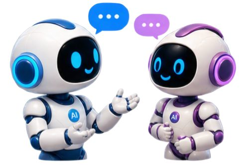
Many assistants now offer both a conversational mode and a more agentic "work" or "agent" mode (in ChatGPT, for example, Chat and Work). In chat, you decide what happens next with each prompt. In an agent mode, you give a goal and the AI can plan and carry out intermediate steps itself: researching, analysing files, producing a document. The key difference is how much control you delegate, which is exactly the autonomy question from Parts 1–4.
Chat
Agent / work mode
Purpose
Quick questions, conversation, exploration
Longer, multi-step tasks and finished deliverables
More agentic: plans, researches and carries out tasks
Review and control
You decide what to ask next
You follow progress, redirect and approve important actions
Example
"Explain this article and give me three interpretations."
"Research this topic, compare the evidence and produce a briefing document."
Neither mode is better; choose the one that fits the task. In both, you remain responsible for directing the work, reviewing results and making the final decisions.
Tokens: AI's finite resource
Tokens are the small units of text an AI model processes: a whole word, part of a word, punctuation or a space. Models read prompts and write responses as tokens, and limits on tokens affect how much a model can handle at once. As a rough guide, 100 tokens is about 75 English words.
Try it
Open the OpenAI Tokenizer and compare a short sentence, a long paragraph, a technical term, text in another language and a prompt full of numbers and symbols. Notice how the token counts differ.
More is not always better
Huge prompts, unnecessary uploads and very long responses use more of your allowance without improving the result.
Context has a cost
Longer conversations and big documents give the model more to process every time.
Iterate with purpose
Give the relevant context, ask focused questions and request only the detail you need.
Build an AI toolkit, not an AI dependency.
Task
Sensible approach
Quick definition or simple question
Any free assistant
Brainstorming, rewriting a short paragraph, first look at a topic
A free tool is usually enough
Analysing a large document or dataset; complex multi-step reasoning; advanced features
Your most capable (often paid or organisation-provided) tool
Important academic or professional work
Compare outputs across more than one model to expose differences, errors and assumptions
Key lesson: don't use your most powerful AI resource for everything. Match the tool to the complexity and importance of the task.
Legal basics: what goes in, what comes out
Generative AI raises legal risks at both ends: the content you input and the outputs it creates and how you use them. Much of it rests on copyright. In Australia, copyright protects the original expression of an idea, not the idea, fact or information itself. It is free and automatic under the Copyright Act 1968 (Cth), applies on creation and needs no registration.
Input risks
Copyright: uploading someone else's work without permission may infringe their exclusive right to reproduce or communicate it. Check how, and for what purposes, material may be used before you upload it.
Confidentiality: entering information you received in confidence, without the discloser's consent, may breach that obligation, and it could resurface in later outputs.
Privacy: entering personal information without consent may breach privacy law, and tools cannot easily delete what has been entered.
Acceptable use: every tool has an acceptable use policy you agree to. Use it for legitimate tasks, don't try to bypass guardrails, and treat a warning as a compliance signal.
Output risks
Copyright infringement: an output can reproduce a "substantial" part of an existing work (judged on quality, not quantity), especially when you ask for a very specific style or niche.
Ownership: Australian copyright requires human skill and effort. Purely AI-generated content may not be protected, which matters if you want to own or commercialise it.
Licence terms: some tools limit how outputs may be used. Read the terms before commercial use.
Misleading conduct: presenting AI-generated work as a named person's, or not disclosing AI involvement where expected, can breach Australian Consumer Law or contract terms.
Practical rules. Treat sharing with a public AI tool as sharing with an uncontrolled third party. Don't enter confidential, personal or sensitive information into public tools; de-identify and redact; use the tool's privacy and data settings; prefer tools your organisation or institution provides under its own agreements; and disclose AI use where it is expected. This is general information, not legal advice.
Quick check: Part 8
Where next?
Ready to build with AI? The Vibe Coding: Building with AI module applies the same human-oversight thinking to creating a working web app.
Reference
Key terms
No terms match that search.
Reference
Sources and further reading
Research and cases
Dell'Acqua, F., McFowland III, E., Mollick, E. R., Lifshitz-Assaf, H., Kellogg, K. C., Rajendran, S., Krayer, L., Candelon, F., & Lakhani, K. R. (2026). Navigating the jagged technological frontier: Field experimental evidence of the effects of artificial intelligence on knowledge worker productivity and quality. Organization Science, 37(2), 403–423. doi.org/10.1287/orsc.2025.21838
Rozenblit, L., & Keil, F. C. (2002). The misunderstood limits of folk science: An illusion of explanatory depth. Cognitive Science, 26(5), 521–562.
Fernbach, P. M., Rogers, T., Fox, C. R., & Sloman, S. A. (2013). Political extremism is supported by an illusion of understanding. Psychological Science, 24(6), 939–946.
The legal content in Part 8 summarises general guidance on generative AI and Australian copyright, confidentiality, privacy and consumer law. It is general information only, not legal advice. Scenarios marked "fictional" are teaching examples. Illustrations are AI-generated teaching images. Product features and model availability change quickly, so the tools you see may differ from these descriptions.